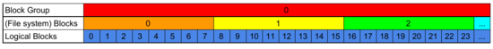

Linux ext4 文件系统的最简完整教学（译）持续更新中
Comment根据原文要求，本文以 Creative Commons Attribution-NonCommercial-ShareAlike 4.0 International License 进行许可。
原文作者：Mete Balci
原文：A Minimum Complete Tutorial of Linux ext4 File System
2017 年 8 月 25 日
翻译：Tilnel @ 2025 年 8 月
为了避免歧义，译文的叙述部分使用 1Ki(B) = 1024(B) ，依此类推，而不是原文的 K(B)。
#引言
我尽量使用例子简洁而全面地描述 Linux ext4 文件系统。
声明：我不是 ext4 方面的专家。尽管我写这篇文章的目标是使其尽量全面足以理解 ext4 如何工作，但也忽略了很多特性。所以这并不是完整的描述。
我管这个叫做“最小完整教程”是因为我会忽略一些可选的部分，以及一些额外的特性，以此保持简洁。在此基础上全面地描述 ext4 的所有功能。ext4 并不简单，所以完全读完可能需要几个小时。
我没有按照先后顺序去执行教程中的例子，所以由于文件系统是动态的如果你自己去尝试执行的话，可能得到不一样的结果。不过这并不影响我们理解原理。
#相关资料
我参考了 Ext4 Disk Layout documentation，ext4 文件系统在 Linux Kernel 中的源码，e2fsprogs（包括 debugfs 和 dumpe2fs），以及 coreutils 的源码（包括 ls）。
#历史
从 2010 年开始，ext4 就是 Linux 的默认文件系统，它是 ext2、ext3 的继任者。“ext” 的意思是 “extended”，第一个版本的文件系统就叫这个。在 1992 年左右它被采用了很短一段时间后就被 ext2 取代了。2000 年时，支持文件系统日志的 ext3 也诞生了。
#教程
#创建 ext4 文件系统
如果你在用 Linux，可能你已经把 ext4 作为你的主文件系统了。不过，为了保护你的文件，我们还是重新创建一块来供我们实验吧。这里我在 /dev/sda 的一个 U 盘上创建了一个 ext4 文件系统。
首先我创建了一个包含了一个 Linux 分区的 GUID 分区表（GPT）。如果你对 GPT 和 Logical Block Addressing（逻辑块寻址，LBA）不熟，推荐你先阅读我的这篇文章：A Quick Tour of GUID Partition Table (GPT)。
小心！使用 fdisk 和 mkfs 的时候要非常非常注意。确保你写入的设备上没有重要数据。
这是分区表：
1 | $ sudo fdisk /dev/sda |
逻辑块大小是 512 字节。分区从第 2048 个逻辑块开始，到第 31266782 个逻辑块结束。
译者：这里原文写成了 Logical Block，实际上是 Sector 也就是扇区。注意与 Block 相区别。
我们就在这个分区上创建文件系统。
1 | $ sudo mkfs -t ext4 /dev/sda1 |
mkfs，制作文件系统（make file system），通过 -t 指定文件系统，这里是 ext4。mkfs 其实是一个 wrapper，它会根据文件系统调用对应的 mkfs.<fs>。所以这里是 mkfs.ext4 在执行。
这里我们可以看到：
- 一个包含了 3908091 个块的文件系统被创建。
- 块大小是 4096 字节，这是自动选择的。我们也可以使用别的块大小。块大小和逻辑块大小（LBA所使用的）并不一样。这里说的约 4 百万个 “block” 指的是文件系统块而不是逻辑块。
- 有 977280 个 “inodes”。我们之后将会了解这个。
- 文件系统 UUID 就是 GPT 中的分区 UUID。
- 有 group tables，inode tables 和 journal（日志）。
- 最后有一个统计数据。我在 mkfs 的源码中找了找，发现它实际上也就写了一些文件系统信息。所以文章也不会特别提到。
文章将会解释所有这些和相关概念。
#Superblock
我们从 Superblock 开始，因为它是包含了文件系统基本信息的一片位置固定的区域。我们可以使用 dumpe2fs 的 -h 仅打印 Superblock 选项来导出其内容。
1 | $ sudo dumpe2fs -h /dev/sda1 |
这边信息非常多，我会解释其中的大部分。
ext4 最基础的存储布局概念就是 Block（块）。ext4 以块为单位分配存储空间，就像是 LBA 一样。然而 ext4 Block 大小可能不一样。在 Superblock 中是 4096B = 4KiB。文件系统中的 Block 总数是 3908091 个。
第二个概念是 Block Group（块组），也就是固定数量的连续的块。在我们的文件系统中 Group 大小是 32768 = 32Ki。
我们有 3908091 个block。将其除以 32Ki:
1 | 3908091 / 32768 = 119, 因为它不是 32Ki 的整数倍, |
所以我们有 119 个 32K Blocks 的 Groups 和一个小的 Group。每个 Block 是 4KiB。由于每个逻辑块（扇区）是 512B，这意味着每个块有 8 个扇区。这就是 ext4 的基本存储安排，如下图所示。

每一个块组都包含：
- Superblock，包含文件系统的信息。位于每组的第一个块。
- （块）组描述符（表）【(Block) Group Descriptors (Table)】包含了数据块 Bitmap，inode Bitmap 和 inode Table 在块组中的位置。每个块组都有一个组描述符表。根据组大小的不同，它有可能占据一块或多个块，并且总是跟在 Superblock 后面。
- 预留的组描述符表 块。这些是为了未来扩展文件系统的时候预留的。ext4 文件系统的大小可以调整，如果是扩展的话，就意味着有更多的块，更多的块组。更多的组描述符就需要空间。通常是紧跟在 GDT 后的 0 或更多个 block。
rezise_inode标志了预留存在与否。 - 数据块 Bitmap。标识了哪些数据块已经被使用了。它占据一个 block，位置不固定，在组描述符中指定。
- inode Bitmap。标识了 inode Table 中的哪些项（entries）已经被使用了。它占据一到多个 blocks（经常是多个）并且位置不固定，由组描述符指定。
- 数据 Blocks。包含了实际的文件内容。占据一到多个 blocks。块组里除去上文所述，剩下的 block 都属于这部分。
在 Bitmap 中，每一个 bit 都标识了一个对应的 block/inode 的使用情况。由于 Bitmap 占据 1block = 4KiB = 32Kibits，故而块组中至多可以有 32Ki 个 blocks——事实上也是这样。并且，一个块组中最多可以有 32Ki 个 inodes，但上面的 Superblock 信息表示，我们只有 8144 个。